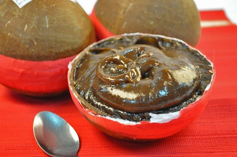

Aside from the famed dolphin watching or the notable diving spots and natural wonders, Bohol is further known for its festivities and merry-making. And one thing to boast upon is the native mouth-watering delights that are already been recognized worldwide as signature "Boholano Delicacies".
RECOMMENDED FOODS
As you would always know, food complements every get-together. So when in vacation, appropriate enough budget for this. As you visit Bohol, never forget to taste some of the mouth delectation. And bring some as “pasalubong” for your loved ones who are not as lucky as you are. At least, let them taste Bohol.
- Peanut Kisses
- Calamay
- Broa (Lady Fingers)
- Bibingka
- Maruya (Banana Flitters)
-
These are among the favorites, not just to the children but to adults as well. Made from Saba bananas, dipped in a sticky mixture, fried and then rolled in sugar, it is perfect for everyday snacks and healthy too.

- Biko
A famous Filipino recipe and can be seen in almost all Filipino celebrations. It is made of glutinous rice, coconut milk, sugar (latik).

This is a signature Boholano recipe and only here you can find cookies shaped like a miniature Chocolate Hills (the famous attraction of Bohol) or Hershey Kisses. It is basically made of high-quality peanuts and eggs, baked crisp to bring that nutty crunch in every bite. Every department stores and souvenir shops have displays of these delicious pasalubongs.
This is one of the must-try treats when visiting Bohol. Though calamay is known across the country (with other names), nothing beats the Calamay from Jagna, enclosed in a coconut shell and sealed with a red band. It is a concoction of glutinous rice, sugar, coconut milk and some peanuts.

A cookie, native from Baclayon, soft in texture that literally melts in your mouth once you take a bite. It is light and crisp, perfect for snacks with milk, coffee or hot chocolate. It is also recommended in making Mango Refrigerator Cake.

There are so many versions of this Philippine treat but basically, it is composed of rice flour, sugar, butter and coconut milk wrapped in banana leaves. It is served as “painit” in early in the morning paired with hot coffee or chocolate or an afternoon snack with cold softdrinks.
RESTAURANTS
- Loboc Riverwatch Floating Restaurant
One of the most popular destinations in Bohol is The Loboc River Buffet Cruise.
Have lunch while cruising through the scenic mangroves of the Loboc River. The tasty buffet offers local fare that is great value for money. Travelers are serenaded by pleasant live music and folk dances during the trip. Don’t be surprised to catch local children climbing palm trees and jumping into the water next to your boat! And don’t worry – the river is very clean.